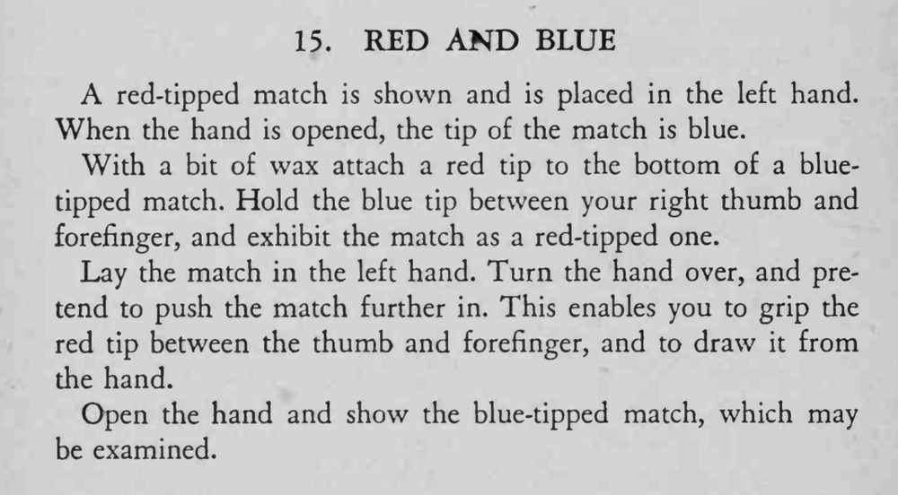

魔术师把一根红头火柴放进左手，打开手时，火柴头却变成了蓝色。
抽走红头时要跟着「推火柴」的假动作走，手别停。

A red-tipped match is shown and is placed in the left hand. When the hand is opened, the tip of the match is blue. With a bit of wax attach a red tip to the bottom of a bluetipped match. Hold the blue tip between your right thumb and forefinger, and exhibit the match as a red-tipped one. Lay the match in the left hand. Turn the hand over, and pretend to push the match further in. This enables you to grip the red tip between the thumb and forefinger, and to draw it from the hand. Open the hand and show the blue-tipped match, which may be examined.